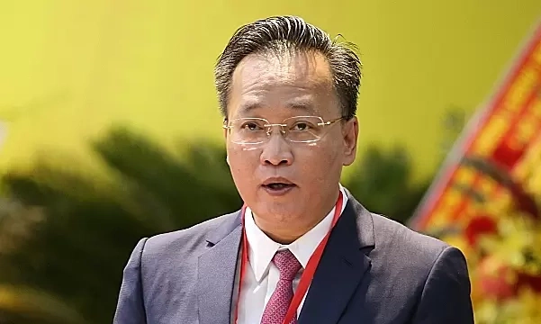
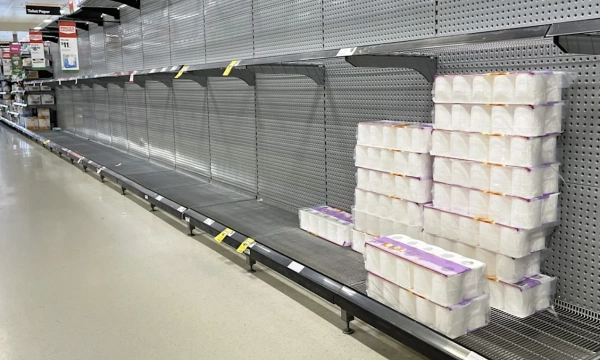

Mỹ – Iran đạt thỏa thuận về ngừng bắn, mở cửa eo biển Hormuz trong hai tuần
Mỹ và Iran đồng ý ngừng bắn trong hai tuần, Tehran sẽ cho phép tàu thuyền đi qua eo biển Hormuz trong thời gian này "với sự điều phối từ lực lượng vũ trăng".
Chiều 6/4, Quốc hội thông qua nghị quyết bầu ông Nguyễn Hữu Nghĩa giữ chức Tổng kiểm toán Nhà nước nhiệm kỳ 2026-2031 với 100% đại biểu có mặt tán thành. Ông Nguyễn Hữu Nghĩa 54 tuổi, quê Hà Nội, Tiến sĩ Tài chính - Ngân hàng, Thạc sĩ Quản lý chính sách kinh tế. Ông là Ủy viên Trung ương Đảng khóa 13, 14; đại biểu Quốc hội khóa 16. Trước khi được bầu, ông giữ chức Bí thư Tỉnh ủy Hưng Yên.
Ông từng công tác tại Ngân hàng Nhà nước Việt Nam, trải qua các vị trí Trưởng phòng Chiến lược phát triển ngân hàng Trung ương, Vụ Chiến lược phát triển ngân hàng; Phó chánh thanh tra; Vụ trưởng Vụ Dự báo, Thống kê tiền tệ; Chánh Thanh tra, giám sát ngân hàng.
Năm 2016, ông làm Trợ lý Thống đốc Ngân hàng Nhà nước, sau đó giữ chức Vụ trưởng Vụ Kinh tế tổng hợp, Ban Kinh tế Trung ương. Đầu năm 2019, ông làm Phó trưởng Ban Kinh tế Trung ương. Tháng 6/2021, Bộ Chính trị điều động, phân công ông giữ chức Bí thư Tỉnh ủy Hưng Yên.

Kiểm toán Nhà nước có chức năng đánh giá, xác nhận, kết luận và kiến nghị đối với việc quản lý, sử dụng tài chính công, tài sản công; quyết định kế hoạch kiểm toán hằng năm và báo cáo Quốc hội trước khi thực hiện. Cơ quan này tổ chức thực hiện kế hoạch kiểm toán hàng năm, thực hiện kiểm toán theo yêu cầu của Quốc hội, Ủy ban Thường vụ Quốc hội, Chủ tịch nước, Chính phủ, Thủ tướng.
Kiểm toán Nhà nước tham gia với các cơ quan của Quốc hội và Chính phủ trong việc xem xét dự toán ngân sách nhà nước, phương án phân bổ ngân sách trung ương, bố trí ngân sách cho chương trình mục tiêu quốc gia, dự án quan trọng quốc gia và quyết toán ngân sách nhà nước. Tổng kiểm toán Nhà nước trước đó là ông Ngô Văn Tuấn. Các Phó tổng Kiểm toán Nhà nước hiện nay gồm các ông Doãn Anh Thơ, Bùi Quốc Dũng, Trần Minh Khương và bà Hà Thị Mỹ Dung.
Mỹ và Iran đồng ý ngừng bắn trong hai tuần, Tehran sẽ cho phép tàu thuyền đi qua eo biển Hormuz trong thời gian này "với sự điều phối từ lực lượng vũ trăng".

Người dân Iran tập trung trên đường phố Tehran, vậy có và hô khẩu hiệu sau khi lệnh ngừng bắn hai tuần với Mỹ được công bố.
Nằm ở bộ nam eo biển Hormuz, cách Iran gần 34 km, bán đảo Musandam của Oman đang chứng kiến những hệ lụy về kinh tế và đời sống khi xung đột bùng phát.